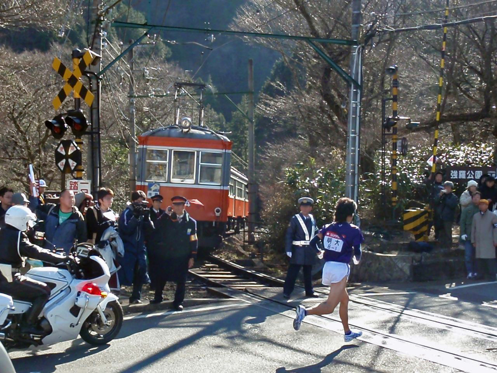
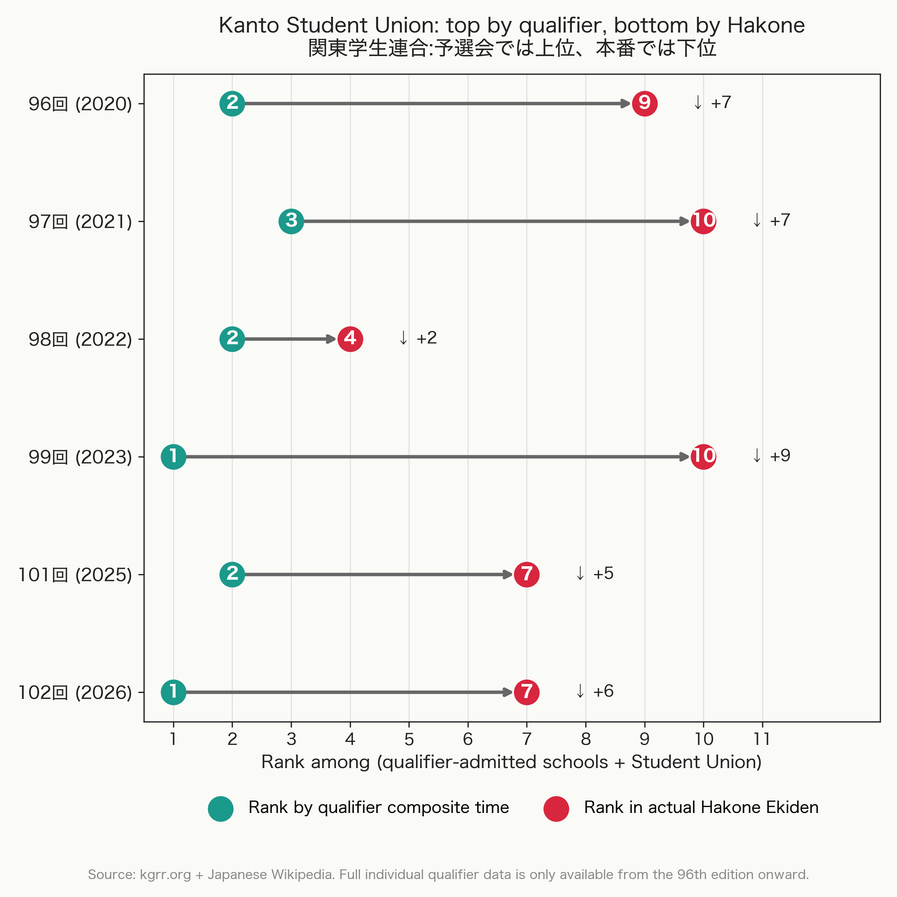
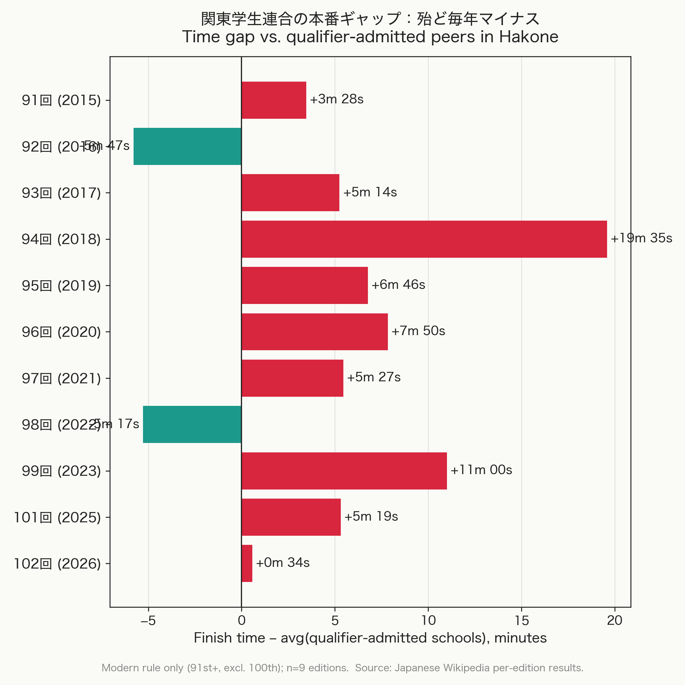
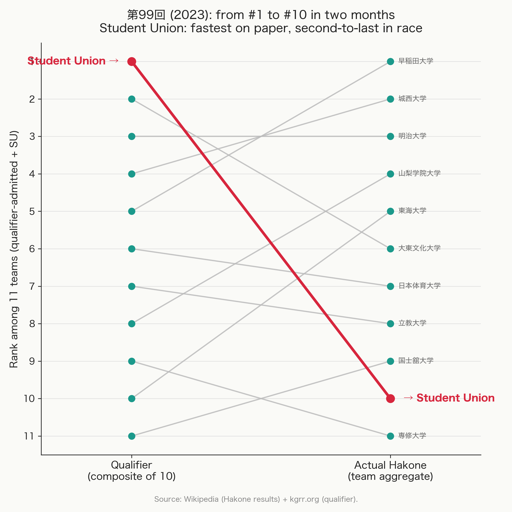
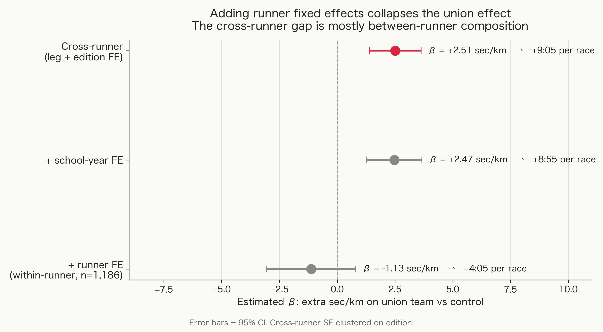
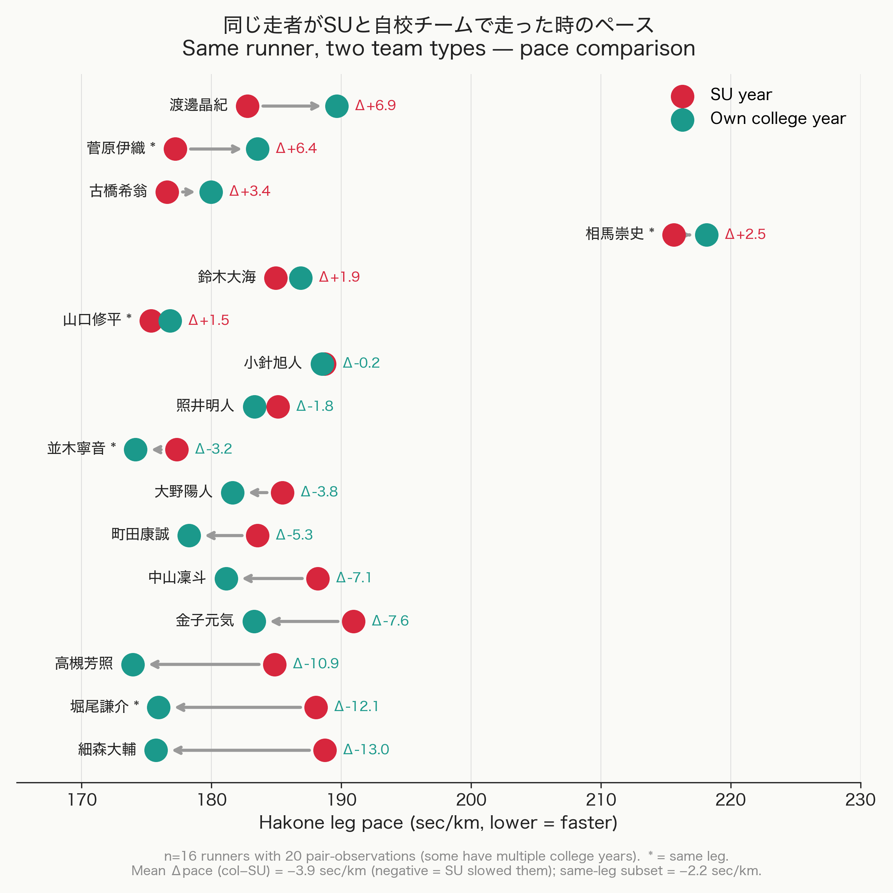
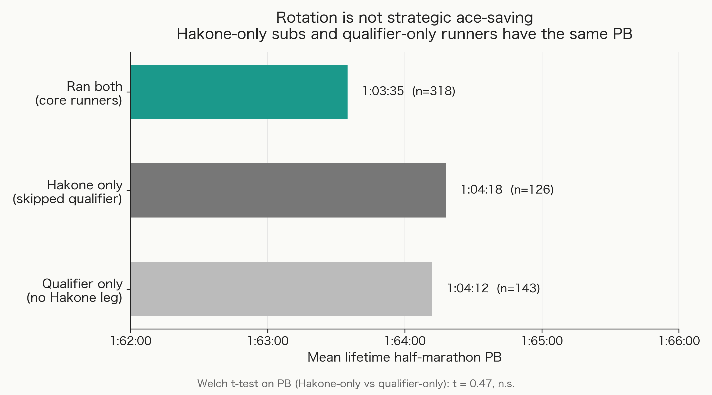
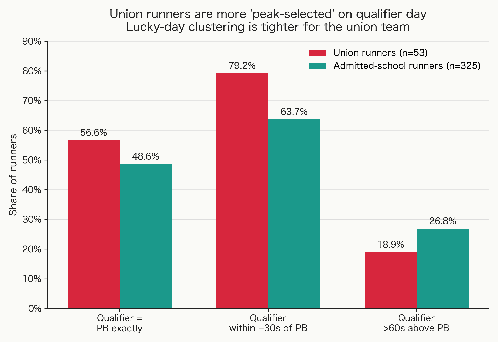

Why the Fastest Individuals Make the Slowest Team: Selection-on-Noise in the Hakone Ekiden Union Team
Motivation

The Hakone Ekiden (箱根駅伝) is one of the most popular sporting events in Japan. Twenty university teams race a 217-km, two-day relay every January 2nd and 3rd, watched by tens of millions on live national television. Alongside those twenty teams there's a peculiar 21st: the Kanto Student Union (関東学生連合). It doesn't represent any college, it doesn't compete for an official ranking, it doesn't earn anyone a place in next year's race. It just runs.
The team is made of the ten fastest individual finishers from the prior October qualifier whose own universities did not advance. On paper this should be a strong squad: their combined qualifier times routinely beat every team that did qualify. In practice they almost always finish near the bottom. Why does a team built from the fastest available runners run slower than the teams those runners just beat?
The fan answer is psychological: ten strangers can't run like a team. The data says no — it's nothing about mentality. When the same runner appears on both the union team and their own college's team in different years, their pace is essentially the same. So the union experience itself isn't the problem. About half the remaining gap is a “lucky-day” effect — the qualifier picks runners on their best day, and best days don't repeat. The other half is a persistent runner-level gap whose exact mechanism the data can't pin down — plausible guesses are specialized Hakone training, leg-matching by a familiar coach, course experience, or some mix.
Background: the race and the team
The Hakone Ekiden is a two-day, 217-km relay held every January 2nd and 3rd, from central Tokyo to the mountain resort of Hakone and back. Twenty university teams send ten runners each, one runner per leg of 18–23 km. The course is tough: leg 5 climbs about 900 meters of elevation through the mountains, leg 6 drops back down, and leg 9 is the longest at 23 km. Each school picks ten runners from a roster of sixteen, and the team's total time across all ten legs sets the official ranking. The race is one of the most-watched sports events in Japan — about twelve hours of live national TV over the two days — and a top-ten finish, which earns automatic entry to the next year's race, is what every Kanto-region college distance team aims for. The race has been held every year since 1920.
Ten of the twenty teams qualify automatically as the previous year's top-ten finishers (the “seeded” schools). The other ten earn their spot through a qualifying race the prior October — a flat half-marathon (21 km) where each school enters up to twelve runners, and the sum of the fastest ten times decides who advances.
That qualifier is what creates the team this post is about. From 2015 on (the modern era), the rule is: take the ten fastest individual finishers at the qualifier whose universities did not advance. They form the Kanto Student Union team and run Hakone as an open-participation entry — their time is recorded, but they don't get an official ranking. The ten members come from ten different schools, none Hakone-bound, and many with small distance-running programs that have rarely or never made Hakone. They have no shared coach, no shared training, and no coordinated leg plan beyond pairing each runner with a leg roughly matching their qualifier distance.
Descriptive fact: union teams finish near the bottom
Figure 1 plots the union team's rank across two comparisons. Teal dots: rank if I sum the ten union members' individual qualifier times and compare to the qualified schools' team aggregates. Red dots: actual rank in Hakone among the qualifier-admitted schools plus itself.

The pattern is striking. Across the six editions plotted, the union team would have been #1 by qualifier total in two years, #2 in three, and #3 in one — the top of the eleven-team comparison. Its actual Hakone finishes in those same six years were 4, 7, 7, 9, 10, and 10. Every single year, the team finishes worse than its qualifier rank predicts. The arrows all point the same way. The average drop is about six places.
The same pattern shows up in absolute time. Figure 2 plots the gap, in minutes, between the union team's Hakone finishing time and the average finishing time of the qualifier-admitted schools that year. Positive means slower.

The average gap is +4:55 across the 11 modern editions (t-test p ≈ 0.044, Wilcoxon p ≈ 0.051). Most years are positive, but two — the 92nd (2016) and 98th (2022) — have the union team beating the admitted-school average. The pattern is there on average, but it's not uniform.
The 99th edition (Figure 3) is the cleanest case. The ten union members' combined qualifier time was 10:34:31 — faster than every actual admitted school (which ran 10:40 to 10:48). They would have been #1 of 11 going in. They finished 10th of 11.

So the basic fact is solid: the team really does finish far below where its qualifier performance predicts. The natural first question is whether wearing the union bib itself is the problem — the fan story about mentality, cohesion, and ten strangers running together.
Within-individual identification: is it the union bib?
The most direct test of the fan story is to find runners who appeared on both the union team and their own college's Hakone team in different years, and compare their pace. If wearing the union bib itself slows you down — psychological cohesion, leg-fit problems, coaching mismatch — then the same runner should be slower on the union team than on their college team.
Sixteen runners in the modern era show up on both teams, giving twenty (runner, year) pair observations. I run this panel regression on runner-leg observations:
pacei,t,leg = μi + αleg + γt + λyear(i,t) + β · Unioni,t + εi,t,leg
where μi is each runner's typical Hakone-leg pace, αleg absorbs leg difficulty, γt absorbs the year of the race, λyear(i,t) absorbs the runner's school year at time t (freshman through senior, plus master's), and Unioni,t is one for runner-years on the union team and zero on admitted-school teams. The school-year FE matters because Japanese college distance runners get a lot faster between year 1 and year 4, and a runner's union-to-college switch usually happens one or two school years apart. Without λ, the within-runner estimate would mix up the union-vs-college comparison with natural improvement. Standard errors are clustered at the edition level.
Figure 4 shows three specifications side by side as a coefficient plot.

The estimate drops from +2.51 sec/km to −1.13 sec/km when I add runner fixed effects on top of leg, edition, and school-year. The fan story doesn't hold. The within-runner estimate is actually slightly negative — the same person runs a touch faster on the union team than on their college team in a different year — but with cluster-SE 0.98 and t = −1.16 it can't be told apart from zero. With only twenty within-runner pairs I can't rule out a real effect of about 1 sec/km in either direction, but I can rule out the union-experience-itself story as the main driver. The within-runner sample is n = 1,186 leg observations, limited to editions 96 onward where I have school-year information.
Figure 5 shows the 16 within-runner runners one at a time. Each runner has a red dot for their union-team leg pace and a teal dot for their college-team leg pace in a different year. About two-thirds move left (faster on their college team), one-third move right.

So the union bib isn't doing anything to the runners on race day. But the team-level gap is still there in the cross-runner data: +2.51 sec/km, about five minutes per race. That gap has to come from somewhere. The next sections walk through three possible explanations.
First guess: are admitted teams sandbagging the qualifier?
The first guess is that the qualifier comparison isn't fair to begin with. Maybe qualified teams hold their best runners out of the qualifier and save them for Hakone. If true, the union team's qualifier-day “lead” is fake, and there's no real puzzle. Matching runner names across the qualifier and Hakone leg results: about 65% of each admitted school's Hakone leg runners also raced the qualifier (63% were in their team's qualifier top 10). So each team rotates about three or four runners out of ten between the two races.
Is that rotation strategic ace-saving, or something more ordinary like injury or scheduling? Figure 6 compares the lifetime half-marathon PBs of three groups: runners who raced both the qualifier and Hakone, runners who raced Hakone but skipped the qualifier (the “Hakone-only” substitutes), and runners who raced the qualifier but didn't get a Hakone leg.

The two rotation groups have essentially identical PBs (1:04:18 vs 1:04:12). The team's best runners (mean PB 1:03:35) race in both events — they are not held out for Hakone. The rotation is among the team's mid-tier runners, and the two pools have the same talent on paper. So admitted teams aren't sandbagging: they run their best lineup in the qualifier, and the Hakone-day rotation is driven by routine logistics (injury, recent training load, scheduling), not by hiding aces.
So the qualifier comparison really is fair. The puzzle is real: a team made of qualifier-top-10 individuals does run slower in Hakone than the schools they just beat. Why?
Second guess: lucky-day selection
The next guess is statistical. The union team picks the top 10 from about 400 individual finishers across all non-advancing schools. Each admitted school picks its top 10 from a roster of about 16. Both rules sort on the same number — qualifier time — but at very different scales.
When you pick the top of a noisy single race, you tend to pick people who had a good day. A runner's qualifier time is their normal speed plus race-day luck (warm-up, sleep, weather, taper). If you take the top 10 of 400, you mostly pick runners who got lucky that day. The next race is a fresh roll of the dice, with average luck. So their times drift back toward their normal speed. Economists call this regression to the mean; in plain English, the lucky day doesn't repeat. How much it bites depends on how hard you select: top 10 of 400 is much more extreme than top 10 of 16.
To probe this directly: the entry rosters list each runner's lifetime PB half-marathon, so for each runner I can compute how far above (or below) their PB they ran on qualifier day. Figure 7 plots the shares of runners falling into three bands relative to their PB.

Over half the runners in both groups ran their lifetime-best half-marathon on qualifier day — the fingerprint of picking on a lucky day. But union runners are more tightly clustered near their PB: 79% are within 30 seconds of their best, versus 64% for admitted-school runners. Admitted teams have a real tail of runners who ran the qualifier as a tune-up, an off day, or as a reserve. Union teams basically don't, because the selection rule filters those runners out.
A bit of math says how much this matters. If race-day luck is roughly bell-curve shaped with spread σ, picking the top K out of N runners biases their average qualifier time downward by about σ · Φ−1(1 − K/N). For an admitted team's top 3 of 16 (K/N = 19%), that's about −0.85σ. For union top 10 of 400 (K/N = 2.5%), it's about −2.0σ. The ratio is about 2.3×. I can check this in the data: comparing each admitted school's top 3 to its runners ranked 4 and below in the same qualifier, the top-3 group runs about +0.58 sec/km slower in Hakone than their own teammates. Scaling by 2.3 gives roughly +1.3 sec/km of lucky-day drift-back for the union team — about half of the cross-runner Hakone-pace gap of +2.5 sec/km.
So lucky-day selection accounts for roughly half the gap, with both theory and the placebo data backing it. What about the other half?
Third guess: specialized training and coaching
By process of elimination, the other half is a persistent runner-level gap: something that follows the runner around — not the union experience itself (Section 5 ruled that out), and not lucky-day statistics (Section 7 accounts for only half). The within-runner FE drop from +2.51 to −1.13 says “this is a between-runner characteristic”; it does not say what that characteristic is.
One thing the data does say cleanly: it isn't raw speed. Union runners' lifetime half-marathon PBs are if anything faster than admitted-school runners' (1:03:49 vs 1:04:12, p < 0.01). So whatever the runner FE absorbs is Hakone-specific or program-specific, not generic fitness.
Plausible candidates, none of which the data identifies separately:
- Specialized Hakone training. Admitted teams spend three months drilling this exact race — the same 18–23 km legs, the same uphill and downhill course, the same January taper. The union runners' home programs typically don't, because their universities aren't Hakone-bound. By the time race day arrives, the admitted-team runners are tuned for this format and the union runners aren't.
- Coach knows who fits which leg. Each admitted-team coach has seen their runners train for months and knows who handles the mountain (leg 5), who anchors well (leg 10), who can push the flat early legs. The union team has no such institutional memory. Each runner is assigned a leg roughly matching their qualifier distance, but there is no coach who has actually seen them race Hakone-shaped courses and can match strengths to legs.
- Familiar coach, familiar program. A runner's own college coach has been with them for one to four years — they know each runner's pacing strategy, their typical weak point on race day, their warm-up routine. The union team's coaching is ad hoc.
- Support infrastructure. Strong distance-running programs have physios, nutritionists, sports-science staff, and depth in the training group that smaller programs don't.
All four of these are runner-level characteristics in the sense the regression needs: they follow the runner around year over year, they're absent on a union team year, and present on a college team year — except that I can't observe any of them directly in my data. The within-runner test identifies the category (it's runner-level, not team-day) but cannot identify the specific channel.
Conclusion
The eleven-edition team-level Hakone gap of about five minutes per race is real and reproducible. The within-runner test rules out the union experience itself as the cause: the same runner runs about the same pace on the union team and on their own college team. So the gap is something between runners, not between situations. About half is mechanical, from lucky-day selection that the qualifier rule mechanically creates. The other half is a persistent runner-level gap whose channel the data can't identify directly, though specialized Hakone training and coaching familiarity are the natural guesses. The race-day mentality story turns out to be the smallest piece of the answer.
A few honest qualifications. The within-runner switch sample is small: only twenty (runner, year) pairs span an SU year and a college-team year for the same individual, so the within-runner β has a wide standard error (cluster-SE 0.98 on edition). A real team-type effect of about 1 sec/km in either direction wouldn't be statistically detectable, and the “race-day team effect is small or zero” reading is provisional pending more data. The 50 / 50 split between the two non-mentality channels is approximate — the order-statistic argument assumes bell-curve race-day luck, and the between-runner piece inherits the same uncertainty; the qualitative claim “structural > team-type” is robust but the specific percentages aren't. And the runner-level half isn't pinned down to any one mechanism: the within-runner FE design tells me the “other half” is a runner-level characteristic and not a team-day treatment, but it cannot separate specialized Hakone training from familiar coaching from leg-matching from course experience from support infrastructure. Calling out specialized training and coaching as the leading candidates is a reasonable guess, not an identified claim.
The general point: when a group is defined by who scored highest on a single noisy measurement, that group's next score will, on average, look worse, and a big chunk of any apparent treatment effect is mechanical. The same caveat applies to peer effects in classrooms, mutual-fund manager skill, draft-pick value, and the sophomore slump. The Kanto Student Union is an unusually clean case because the selection rule is transparent and the counterfactual — the same person running for their own college in a different year — is observable for a useful slice of the data.